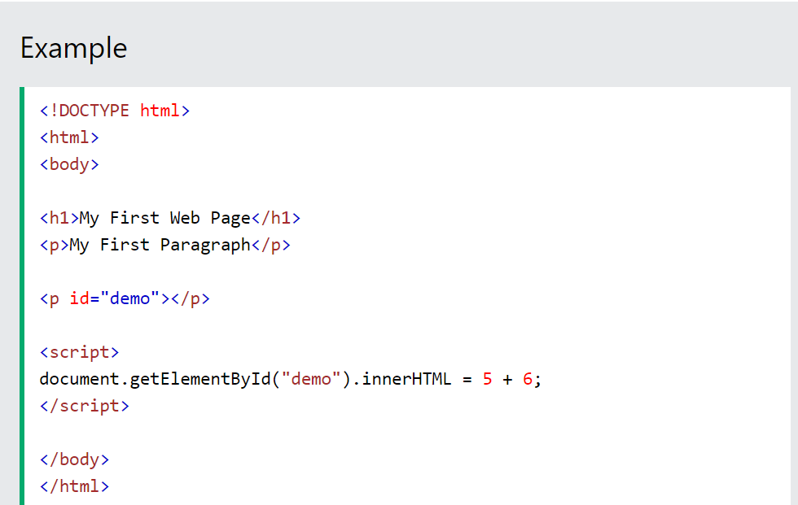
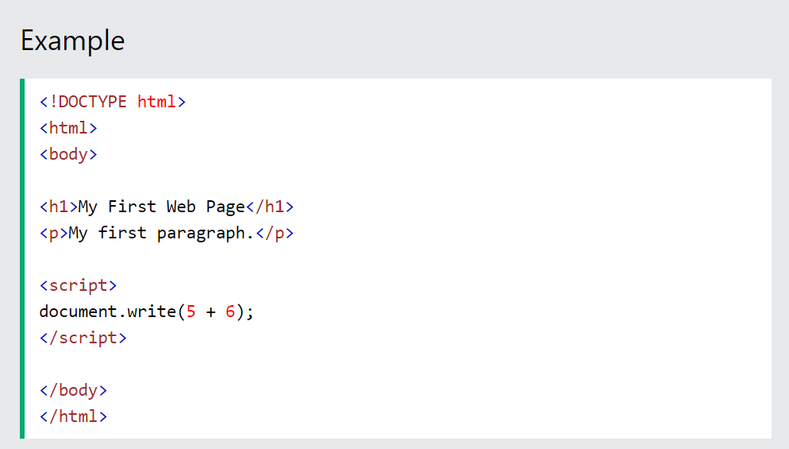
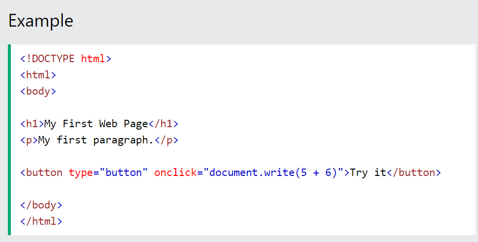
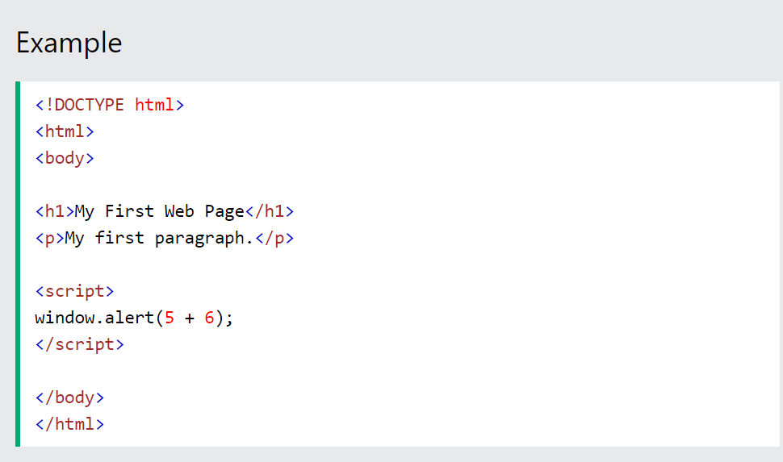
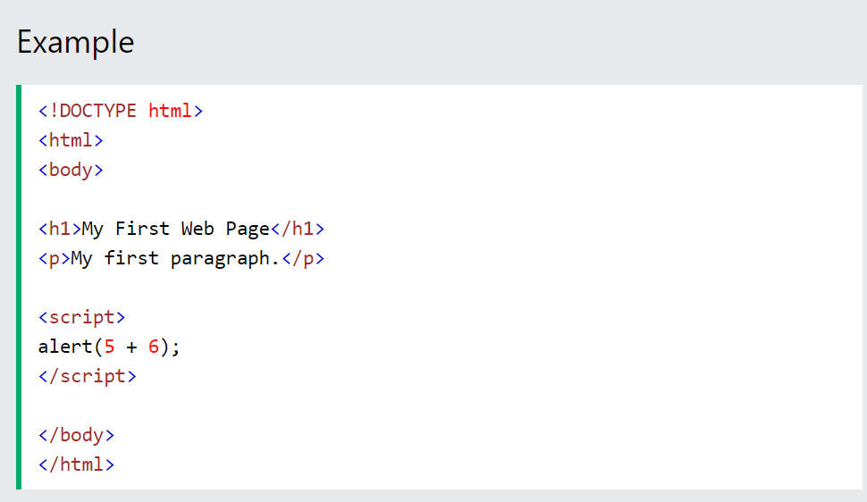
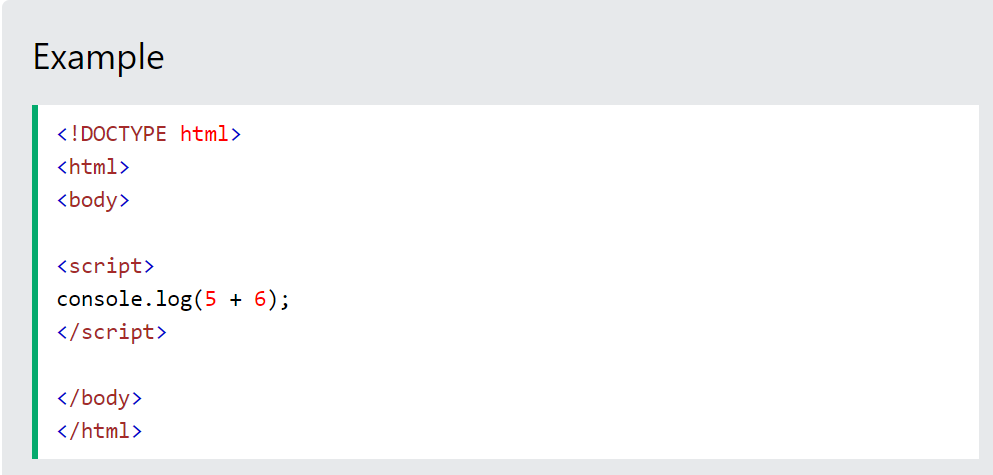

Writing into the HTML output using document.write().
Writing into an alert box, using window.alert().
Writing into the browser console, using console.log().
Using innerHTML
To access an HTML element, JavaScript can use the document.getElementById(id) method.
The id attribute defines the HTML element. The innerHTML property defines the HTML content:

Changing the innerHTML property of an HTML element is a common way to display data in HTML.
Using document.write()
For testing purposes, it is convenient to use document.write():

Using document.write() after an HTML document is loaded, will delete all existing HTML:

The document.write() method should only be used for testing.
Using window.alert()
You can use an alert box to display data:

You can skip the window keyword.
In JavaScript, the window object is the global scope object, that means that variables, properties, and methods by default belong to the window object. This also means that specifying the window keyword is optional:

Using console.log()
For debugging purposes, you can call the console.log() method in the browser to display data.

JavaScript Print
JavaScript does not have any print object or print methods.
You cannot access output devices from JavaScript.
The only exception is that you can call the window.print() method in the browser to print the content of the current window.